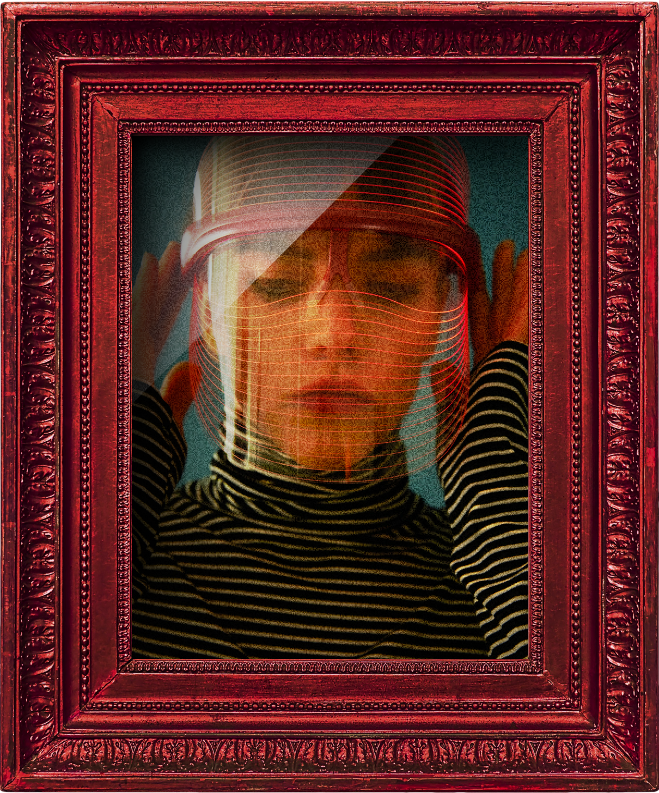

The intersection of architectural precision and the fluid grace of a body in constant motion. A silent symphony of woven silk and structured shadows defining the modern silhouette today. We find beauty in the temporary nature of a moment caught between the seams of time. The art of dressing is a meticulous dialogue between who we are and who we pretend to be. Searching for the perfect equilibrium between brutalist structures and the softness of hand-stitched lace. Every fold of fabric carries the weight of a thousand untold stories whispered in the atelier. Transcend the boundaries of seasonal trends to find a permanent residence in the avant-garde. An exploration of monochromatic depth where the absence of color reveals the presence of pure form. To wear a garment is to inhabit a sculpture designed to move through the chaos of the city. The cadence of the runway is reflected in the rhythmic repetition of a singular, perfect stitch. The intersection of architectural precision and the fluid grace of a body in constant motion. A silent symphony of woven silk and structured shadows defining the modern silhouette today. We find beauty in the temporary nature of a moment caught between the seams of time. The art of dressing is a meticulous dialogue between who we are and who we pretend to be. Searching for the perfect equilibrium between brutalist structures and the softness of hand-stitched lace. Every fold of fabric carries the weight of a thousand untold stories whispered in the atelier. Transcend the boundaries of seasonal trends to find a permanent residence in the avant-garde. An exploration of monochromatic depth where the absence of color reveals the presence of pure form. To wear a garment is to inhabit a sculpture designed to move through the chaos of the city. The cadence of the runway is reflected in the rhythmic repetition of a singular, perfect stitch.
